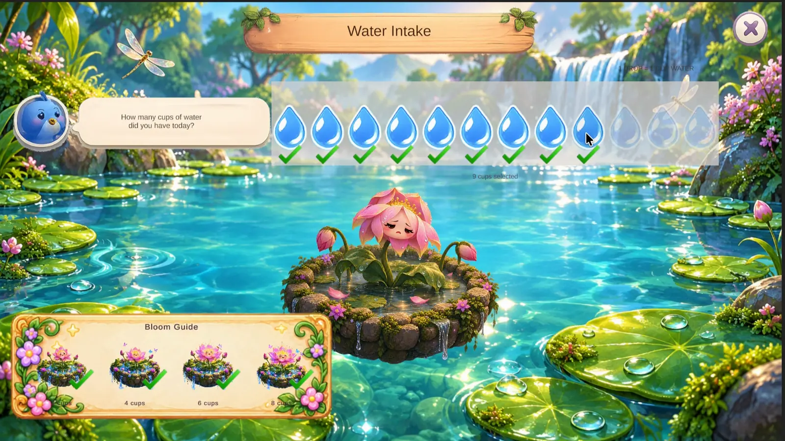
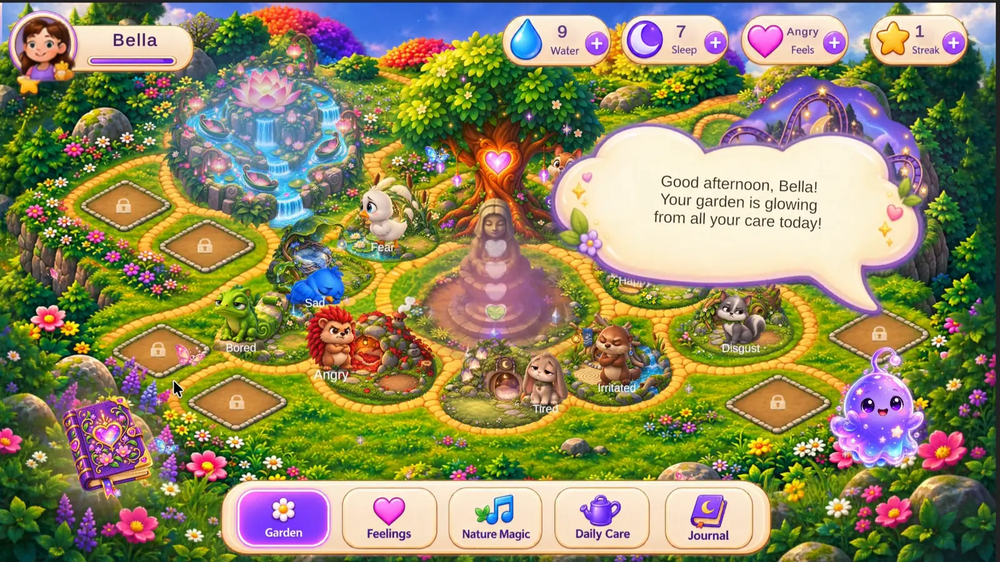
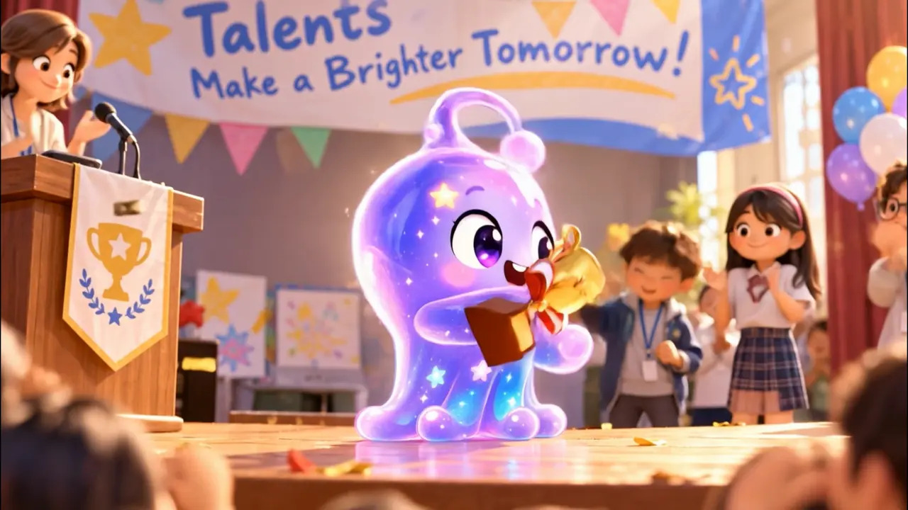
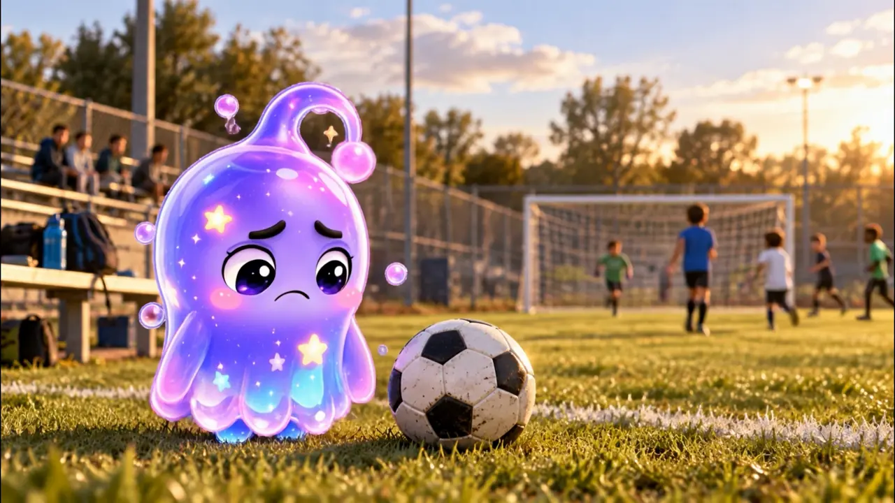
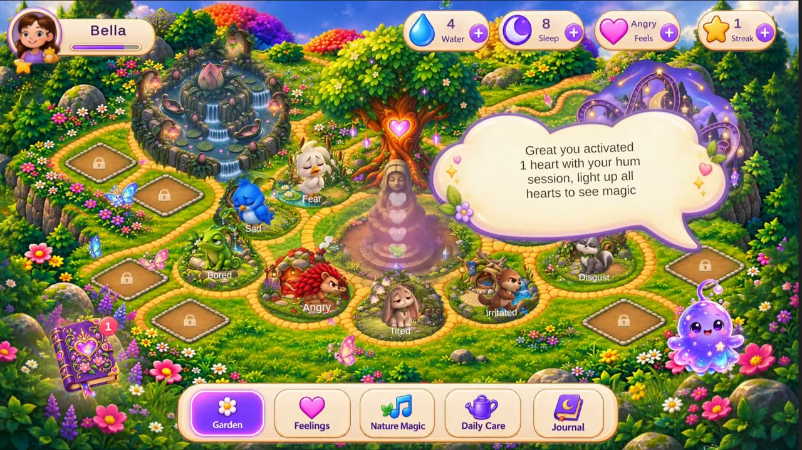
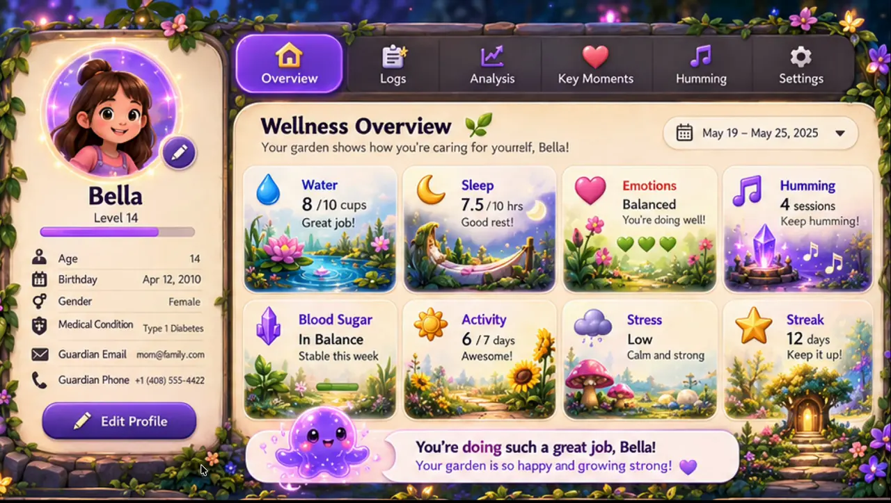
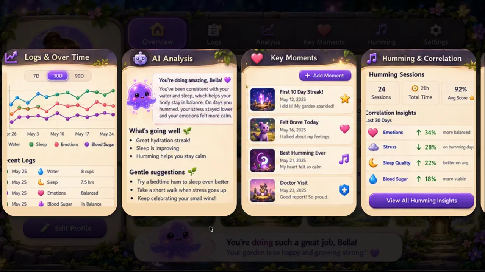

Bloom the lotus
Drop in today's cups of water and watch a sleepy bud open into a beaming lotus.
My Friend Riley is a cozy wellbeing game for kids. Hum along on a magical rollercoaster, slice through stress, and come home to a living garden where every feeling has a furry friend.

Riley gets both. The game turns those everyday ups and downs into play kids can actually do something with: a hum, a breath, a check-in, a tiny act of care.





Nine emotion pets roam the garden, each with a home of its own. Care for yourself, and the whole place comes alive: the lotus blooms, the moon coaster glows, the heart tree grows with your streak.
Tap a friend, just like kids do in the game.
The happy puppy is so glad you came to the garden!
every feeling is welcome
Drop in today's cups of water and watch a sleepy bud open into a beaming lotus.

Feed last night's hours to the Moon Cactus and wake it up rested and glowing.

Little wishes, a gratitude seed and a gentle tip, all in Riley's magic book.
No streak shaming, no scary meters, no lost progress. A missed day just means a sleepy flower waiting for a splash, and logging a hard feeling earns the same warmth as a happy one.


You, your parents, or your carers can see what the garden sees: feelings, water and sleep over time, key moments, and how humming sessions line up with the rest of the day. The garden stays playful, your info is safeguarded behind a vault PIN, and the details stay private.